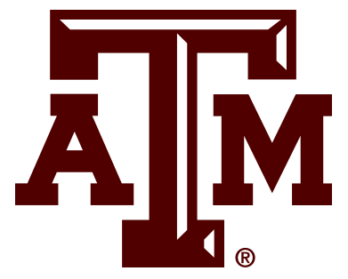
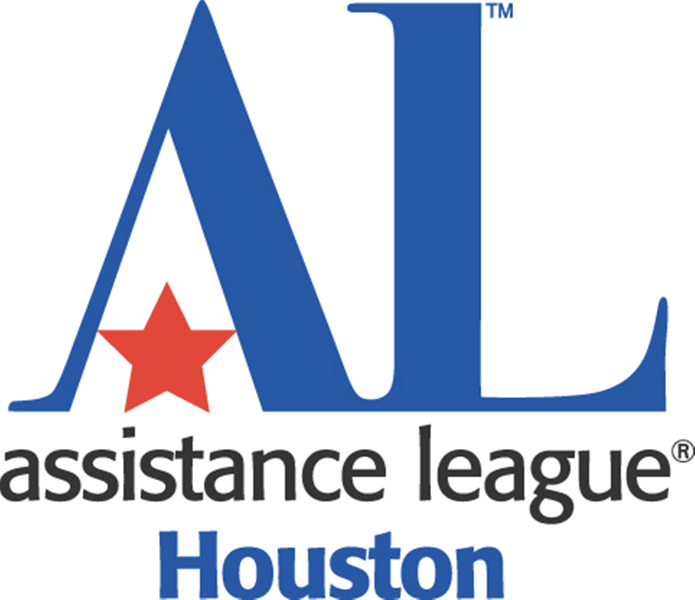

For the 2018-2019 school year, I was involved in helping the A&M community by serving as an
Engineering Village Peer Mentor.
In this position, I helped assist freshman living in engineering village in their transition to college, whether it be in social, academic or other regards.
My responsibilities included holding group meetings, activities, and socials, being available to students with any questions, and generally ensuring the well-being of around 400 students.
Additionally, I have been involved with
The Assistance League of Houston for around six years. The national, non-profit organization works to provide food, shelter and other necessities to local charities, and those in need directly. Though I have been less directly involved since entering college, in high school I served as a member, then Secretary, and finally Co-Chair of the teenage division my senior year. My responsibilities included organizing meetings of our division, handling budgeting, and delivering goods directly to multiple sites in Houston.

